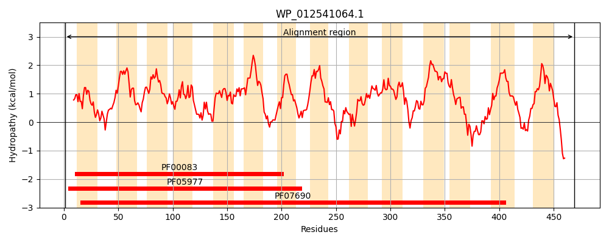
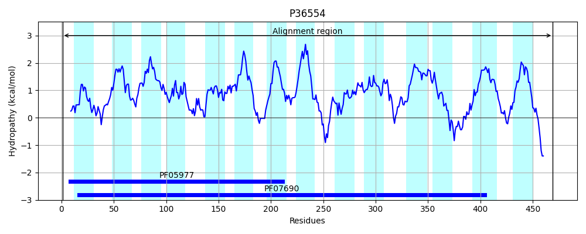
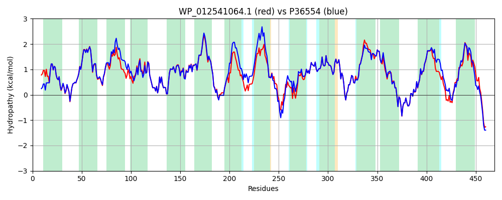

Hit Accession: P36554
Hit TCID: 2.A.1.3.26
Hit Description: gnl|BL_ORD_ID|10058 gnl|TC-DB|P36554|2.A.1.3.26 Inner membrane transport protein yegB - Escherichia coli.
Mach Len: 469
e:0.000000
Query TMS Count : 14
Hit TMS Count: 14
TMS-Overlap Score: 13.550000
Predicted Substrates:CHEBI:23614;deoxycholate, CHEBI:7644;novobiocin, CHEBI:22599;arabinose
BLAST Alignment:
Score: 2028 , Bit scores: 785 bits, E-value: 0.0e+00, Alignment length: 469, Percentage identity: 84
Query: 1 MTDLPASVRWQLWIVAFGFFMQSLDTTIVNTALPSMAKSLGESPLHMHMIIVSYVLTVAVMLPASGWLADRVGVRNIFFTAIVLFTAGSLFCAQASTLDQLVMARVLQGIGGAMMVPVGRLTVMKIVPRDQYMAAMTFVTLPGQVGPLLGPALGGVLVEYASWHWIFLINIPVGIVGAIATLCLMPNYTLQTRRFDLSGFLLLAAGMATLTLALDGQKGLGISSRWLAGLVAVGLAALLLYLWHARGNARALFSLNLFRNRTFSLGLGGSFAGRIGSGMLPFMTPVFLQIGLGFSPFHAGLMMIPMVLGSMGMKRIVVQVVNRFGYRRVLVASTLGLAAVSLLFMFSALAGWYYALPLVLFLQGMINSSRFSSMNTLTLKDLPDDLASSGNSLLSMVMQLSMSIGVTIAGLLLGLYGQQHMSLDAASTHQVFLYTYLSMAAIIALPALIFSRVPDDVGTNTVIRRRNRS 469
MTDLP S RWQLWIVAFGFFMQSLDTTIVNTALPSMA+SLGESPLHMHM+IVSYVLTVAVMLPASGWLAD+VGVRNIFFTAIVLFT GSLFCA + TL++L++AR LQG+GGAMMVPVGRLTVMKIVPR+QYMAAMTFVTLPGQVGPLLGPALGG+LVEYASWHWIFLINIPVGI+GAIATL LMPNYT+QTRRFDLSGFLLLA GMA LTLALDG KG G+S +AGLVAVG+ AL+LYL HAR N RALFSL LFR RTFSLGL GSFAGRIGSGMLPFMTPVFLQIGLGFSPFHAGLMMIPMVLGSMGMKRIVVQVVNRFGYRRVLVA+TLGL+ V+LLFM +AL GWYY LP VLFLQGM+NS+RFSSMNTLTLKDLPD+LASSGNSLLSM+MQLSMSIGVTIAGLLLGL+G QH+S+D+ +T VF+YT+LSMA IIALPA IF+RVP+D N I RR RS
Sbjct: 1 MTDLPDSTRWQLWIVAFGFFMQSLDTTIVNTALPSMAQSLGESPLHMHMVIVSYVLTVAVMLPASGWLADKVGVRNIFFTAIVLFTLGSLFCALSGTLNELLLARALQGVGGAMMVPVGRLTVMKIVPREQYMAAMTFVTLPGQVGPLLGPALGGLLVEYASWHWIFLINIPVGIIGAIATLLLMPNYTMQTRRFDLSGFLLLAVGMAVLTLALDGSKGTGLSPLTIAGLVAVGVVALVLYLLHARNNNRALFSLKLFRTRTFSLGLAGSFAGRIGSGMLPFMTPVFLQIGLGFSPFHAGLMMIPMVLGSMGMKRIVVQVVNRFGYRRVLVATTLGLSLVTLLFMTTALLGWYYVLPFVLFLQGMVNSTRFSSMNTLTLKDLPDNLASSGNSLLSMIMQLSMSIGVTIAGLLLGLFGSQHVSVDSGTTQTVFMYTWLSMALIIALPAFIFARVPNDTHQNVAISRRKRS 469 | Protein Hydropathy Plots: |
|---|
|  |  |
Pairwise Alignment-Hydropathy Plot:
|
|---|
|  |